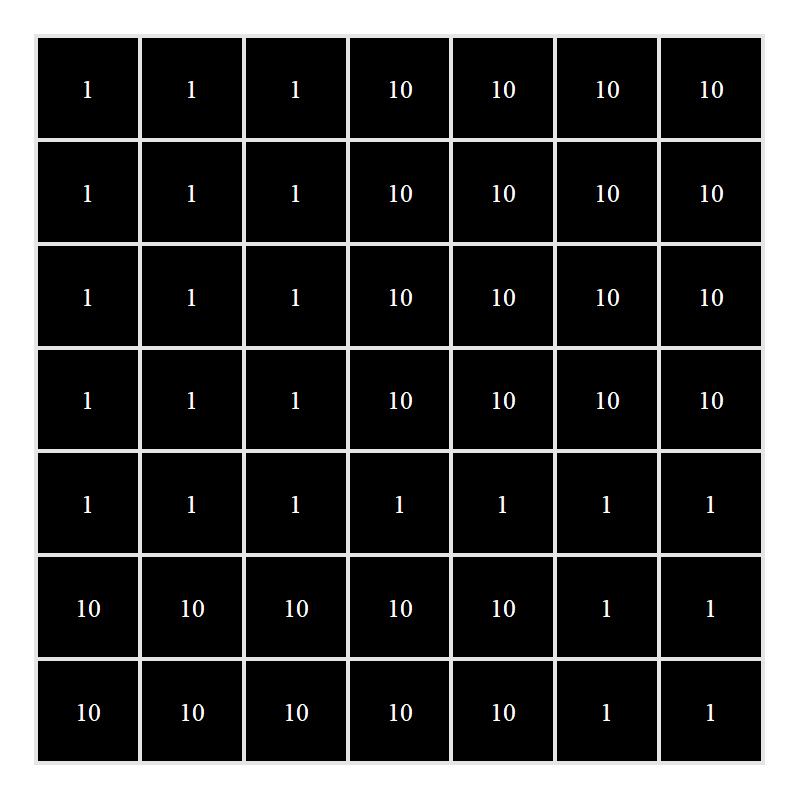
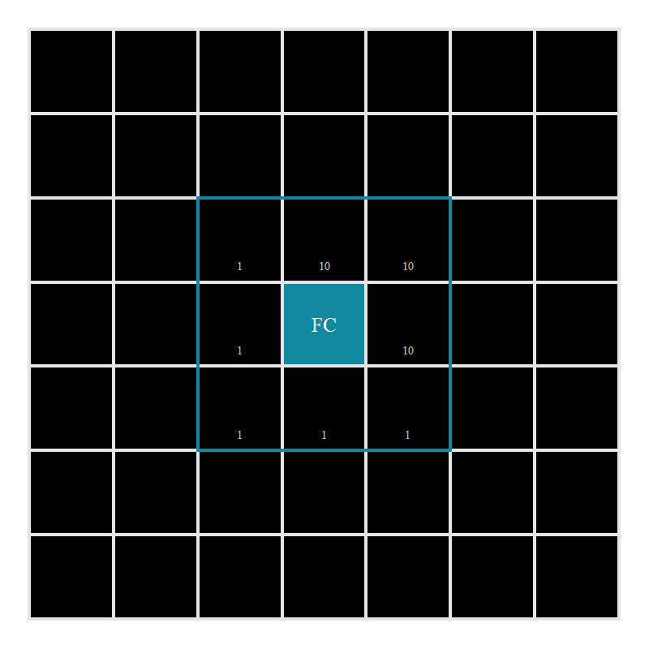

Rule evaluation
Gerald H. Taranto
Thu 27, January, 2022
Source:vignettes/articles/scapesClassification_01_2_RuleEvaluation.Rmd
scapesClassification_01_2_RuleEvaluation.RmdGlobal evaluation
Classification rules can be applied to all raster cells. For instance, when we set one or more threshold values (e.g. cell value > threshold) or when we evaluate at what locations different spatial objects overlap (e.g., functions cond.4.all() and anchor.svo()).

"cell value > 1" are classified.
Focal evaluation
In other cases it can be more fruitful to perform targeted evaluations where classification rules are only tested at specific positions on a raster. These positions are identified based on their adjacency to particular raster cells that we will call anchor cells. Anchor cells can be derived by: previous classifications, environmental or geographic characteristics, local maxima or minima or spatial objects.
Class contiguity
An example of focal evaluation is when we have some anchor cell and we want to evaluate if its neighboring cells belong to the same class (Figure 2).

"cell value > 1". Positive evaluations are showed by a green circle; negative evaluations are showed by a red circle. The blue border indicate the focal cell neighborhood, the yellow border the test cell neighborhood.
Focal cell. At turn, each anchor cell is treated as a focal cell. Cells in the neighborhood of a focal cell are considered adjacent to it and are evaluated against the classification rule(s). In Figure 2 the focal cell is showed in blue and its neighborhood is showed by the blue border.
Test cell. The cell in the neighborhood of the focal cell that is being tested. In Figure 2 the test cell is showed in yellow and its neighborhood is showed by the yellow border.
Rule evaluation. If the classification rule(s) evaluates to true, the test cell is classified, otherwise it is not. In Figure 2 we considered a dummy classification rule
"cell value > 1"; positive evaluation are showed by a green circle; negative evaluations are showed by a red circle.
Class discontiguity
A second example of focal evaluation is when we have some anchor cell and we want to evaluate if its neighboring cells belong to a different class (Figure 3).

"cell value == 1". Positive evaluations are showed by a green circle; negative evaluations are showed by a red circle. The blue border indicate the focal cell neighborhood, the yellow border the test cell neighborhood.
Class continuity
Class contiguity evaluates if groups of adjacent cells belong to the same class. As long as new cells are classified based on class continuity rule(s), it is possible to find a new pool of adjacent cells that can be tested against the same continuity rule(s). This process can be defined as class continuity and can be used to join into the same class cells that share the same property(ies) and that are connected to the same anchor cell(s) (Figure 4).

"cell value > 1". Note that cells classified in one iteration (Iteration n) become focal cells in the next iteration (Iteration n+1).